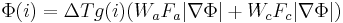
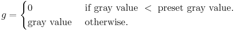
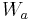
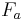

Level Sets
| Level Sets | |
|---|---|
| Project | Fiji |
| URL | https://imagej.net/Level_Sets |
| Source | on GitHub |
| License | GPLv3 |
| Release | 1.0.2 |
| Date | Tue May 02 10:33:25 CDT 2017 |
| Development status | Stable |
| Support status | None |
| Team | |
| Founders | Erwin Frise |
| Leads | - |
| Developers | - |
| Debuggers | - |
| Reviewers | - |
| Support | - |
| Maintainers | Curtis Rueden |
| Contributors | Erwin Frise, Johannes Schindelin, Albert Cardona, Mark Hiner, Arne-Michael Toersel |

Contents
Level Sets and Fast Marching
Introduction
Level Sets are an important category of modern image segmentation techniques based on partial differential equations (PDE), i.e. progressive evaluation of the differences among neighboring pixels to find object boundaries. Ideally, the algorithm will converge at the boundary of the object where the differences are the highest.
The Fiji plugin provides two PDE based methods, the more basic fast marching and the advanced active contour algorithm.
Fast marching works similar to a standard flood fill but is more sensitive in the boundary detection. While growing the region it constantly calculates the difference of the current selection to the newly added pixels and either stops if it exceeds a pre selected gray value difference or if it would exceed a certain pre-selected rate of growth. This algorithm is sensitive to leaking - if the object has a gap in the boundary, the selection may leak to the outside of the object.
Level sets advance a contour like a rubber band until the contour hits an object boundary. The rubber band like nature (= curvature) prevents the contour from leaking if there are gaps in the boundary. The strength of the rubber band and a gray level difference can be pre-selected.
The speedy fast marching can be used as input for the slower active contours. If the image is very large, starting with Fast Marching and using the contour from the fast marching to refine the object with Level Sets can significantly speed up the object detection.
Algorithmic details
The fast marching algorithm expands from a seed point the to the object boundary until it encounters a pre-set difference in the pixels intensities.
Active contours evolve an initial contour in time according to multiple intrinsic geometric measures of the image. In the plugin implementation the measures are an edge based constraint, a grey value penalty and a curvature constraint which prevents them from leaking the object boundary at areas of poor edges. During curve evolution the active contours in this implementation can split and merge and thus be used to detect even multiple objects. The algorithm in the plugin is based on a state-of-the-art very memory efficient and fast sparse-field computation (Terry S. Yoo, Insight into Images, Chapter 8) which can be easily extended to other variations of the active contour/level set algorithms.
This implementation is based on following PDE update:

with

- = difference of smoothened (gaussian blurred) image
- 

 = iso surface at current iteration i
= iso surface at current iteration i -  = Advection weight
-  = Advection force
 = Curvature weight
= Curvature weight = Curvature force
= Curvature force
A more detailed explanation of the algorithm can be found at following links:
- Book: Insight Into Images Principles and Practice for Segmentation, Registration and Image Analysis
- ITK online documentation, Chapter 9.3
- Wikipedia Fast Marching
- Wikipedia Level Sets
An upcoming future implementation will add geodesic active contours as described by Caselles et.al.
Tutorial
Fast Marching
Open the example image "Dot Blot (7k)" in the menu File, Open Samples
Error creating thumbnail: Unable to save thumbnail to destination
Using the "Point selections", select a seed point as a start.
Error creating thumbnail: Unable to save thumbnail to destination
Selecting a point is very similar to selecting a location for filling an object - in fact, fast marching is very similar to flood fill with a more sophisticated boundary detection. In the following picture, a point inside one of the dots is selected:
Error creating thumbnail: Unable to save thumbnail to destination
Go to the Level Sets dialog, deselect the Level Sets option and select the Fast Marching option. Keep the parameters the same:
Error creating thumbnail: Unable to save thumbnail to destination
Click on OK and you'll see a constantly updated progress window and, after completion, a result window. The segmented points will be shown in green in the progress window.
Progress:
Error creating thumbnail: Unable to save thumbnail to destination
Result:
Error creating thumbnail: Unable to save thumbnail to destination
Level Sets
Open the example image "Dot Blot (7k)" in the menu File, Open Samples
Using an object selector, select an approximate shape inside or outside the object. In the first example, a oval inside one of the Dots is selected.
Error creating thumbnail: Unable to save thumbnail to destination
Go to the Level Sets dialog, deselect Fast Marching and make sure Level Sets is selected. Keep the parameters and click OK. Note that the "Region expands to" option is set to outside, i.e. the contour will grow to the outside of the initial selection. Thus, make sure that the setting "Region expands to" matches the initial selection relative to the object of interest.
Error creating thumbnail: Unable to save thumbnail to destination
Level Sets advance a contour until it hits a boundary. Thus, the progress window shows the currently active contour in red and the previously active contour in yellow. The contour will advance until it hits the border of the dot.
Progress:
Error creating thumbnail: Unable to save thumbnail to destination
Result:
Error creating thumbnail: Unable to save thumbnail to destination
Note the output in the debug window:
Level Set (Active Contours): Starting Mon Apr 27 20:12:14 PDT 2009 Note: Each iteration step is 100 iterations Note: ROI is shape, parsing shape Initiated boundary pixels: 24 ZERO, 45 INSIDE, 144597 OUTSIDE Grey seed not set - setting to mean of ROI boundary = 65 Delta t = 0.07575757575757575 Iteration step: convergence = 0.02057951452408498, number of pixels changed = 0.02057951452408498 Iteration step: convergence = 0.016657803438813925, number of pixels changed = 0.016657803438813925 Iteration step: convergence = 0.011131099511386819, number of pixels changed = 0.011131099511386819 Iteration step: convergence = 0.006338065350476374, number of pixels changed = 0.006338065350476374 Converged! Iteration step: convergence = 0.00499110164272695, number of pixels changed = 0.00499110164272695 Level Set: Finished Mon Apr 27 20:12:15 PDT 2009
The "Grey seed" is the value derived from the region of interest. The "Greyscale tolerance" setting in the dialog will add a penalty to the progression if the value exceeds the limits set in the dialog (65 plus/minus 30 in the example, i.e. grey values from 35 to 95). This will limit the segmentation to grey values within the tolerance limits.
More important is the output of the convergence. If the convergence in the dialog is set too high, the segmentation may terminate prematurely. If it's set too low, the boundary may expand to infinity or contract to nothing. If this happens, note the last good convergence value, set a value a bit higher in the dialog and try again.
In the following example, the contour will advance to the inside with a rectangular selection as starting point. Note, that with Level Set segmentation, several objects can be selected at the same time. During the contour advancement, the contour will separate into the separate objects. Select a rectangular region outside the object of interest:
Error creating thumbnail: Unable to save thumbnail to destination
Go to the Level Sets plugin dialog, select "Region expands to inside"
Error creating thumbnail: Unable to save thumbnail to destination
The end result looks slightly different because the local differences are not the same when the contour approaches the dot from the outside or the inside.
Progress:
Error creating thumbnail: Unable to save thumbnail to destination
Result:
Error creating thumbnail: Unable to save thumbnail to destination
All three dots were segmented into distinct objects.
The shape of the initial selection is not particularly important but it is important the the selection is either completely inside the object or completely outside the object. The segmentation will not work if the selection crosses the object boundary.
Hint: If the contour "leaks" because of an interruption or fuzzy part of the object boundary, try increasing the curvature value. This will increase the strength of the elastic boundary and helps mitigate those leaks.
Parameters
The "Preprocessing" option is used for calculation the differences of neighboring pixels. Currently it will always default to Gaussian. A future implementation may have anisotropic filtering as an option.
Fast Marching
- Gray value threshold:
This is used to determine the stopping point for the expansion as the gray value difference between boundary pixels and the seed point(s). Increase it if the image has stronger contrasts, decrease it if the contrast is not strong.
- Distance threshold:
How much the selection is permitted to expand in one iteration. Increasing it will speed up the process but desensitize it.
Level Sets
- Method:
"Active Contours" or "Geodesic Active Contours". "Active Contours" is the algorithm as described above. "Geodesic Active Contours" are an implementation of the algorithm as described by Caselles et.al. (International Journal of Computer Vision 22:61) and implemented in the in the GeodesicActiveContour class of ITK. Geodesic active contours can find Canny-type edges in the region of interest, while also introducing a smoothing term. This implementation is still experimental and not completely vetted. Use with caution. There will be a more complete description once it is feature complete. The convergence value should be lowered for Geodesic Active Contours.
- Advection:
Essentially the speed the contour progresses. Increasing the value will speed up the segmentation but it may advance too fast and miss the boundary.
- Propagation:
This number determines the expansion (propagation) of the contour. Only used for Geodesic Active Contours.
- Curvature:
This number determines the weight of the curvature in progressing the contour.
- Grayscale tolerance:
During contour evolution the gray values of the current contour are compared to the next progression of the contour. If they exceed the value set here, a penalty is introduced.
- Convergence:
The value here is used as criterion for converging. If the changes in the contour between two iterations are lower than that value, the algorithm will stop. Increase the value if the contour doesn't stop at the boundary and/or collapses completely or decrease it if it stops to early.
- Region expands to:
As described in the tutorial, this setting determines if the contour will evolve to the inside of the selection or the outside.